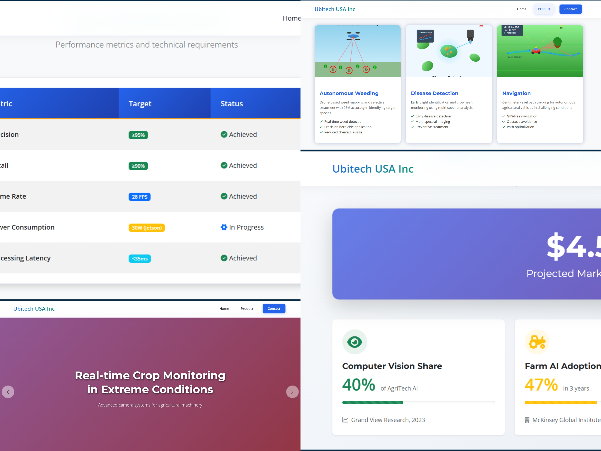
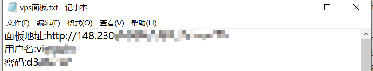
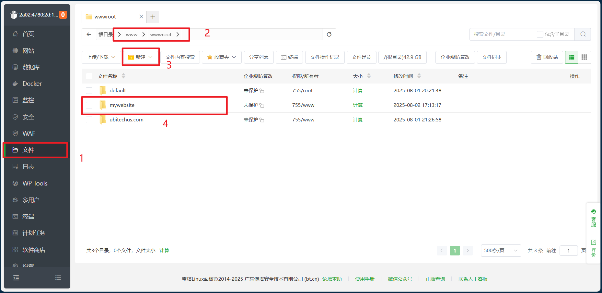
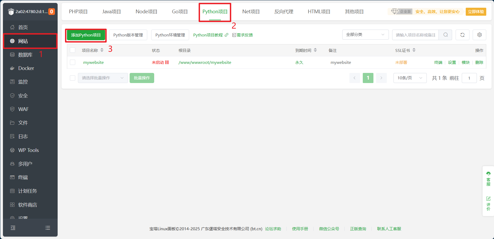
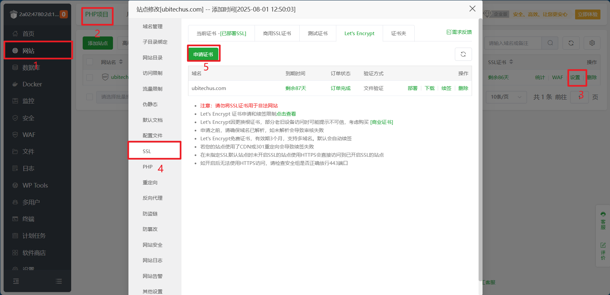
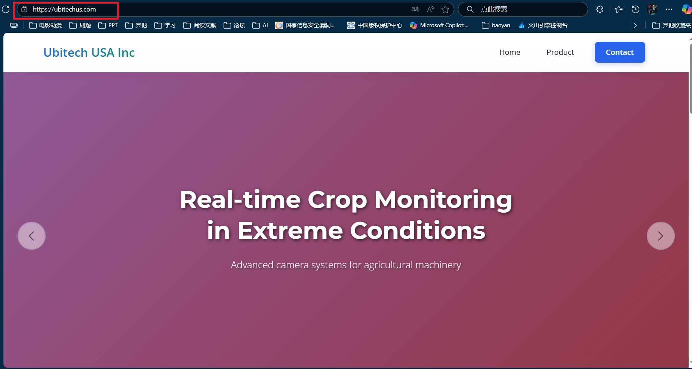

搭建一个外贸电商网站
一个部署在Hostinger服务器上的电商网站
7 月 30 日上午十点左右，何老师突然打来电话，提到他正在推进一个横向项目，其中需要搭建一个网站。他表示已经准备好了域名，且服务器需部署在美国，以便更好地服务美国用户。随后老师询问我们项目团队中负责 Web 开发的同学是否有人愿意承接这项工作，还特意说明会提供相应的劳务费，并且强调任务难度不高、操作比较简单。
我在团队群里同步了这个消息后，等了一会儿没收到大家的回复，便主动接下了这个任务。
了解网站的搭建
老师在传递消息的同时，第三方杨总提供了一些网站，说在这些网站上搭建、测试、购买域名。
由于我此前虽通过 Django 接触过 Web 开发，但对这些平台并不熟悉，因此先通过 B 站、YouTube 等渠道搜索了它们的核心功能，初步总结如下：这些平台均属于网站开发、部署、代码托管及域名购买管理的一站式服务工具，覆盖从建站到上线的全流程需求，适用场景包括但不限于电商网站开发。其中，它们普遍支持通过 WordPress 搭建网站 ——WordPress 作为专业建站平台，主打 “零代码操作”，用户可通过拖拽组件快速完成网站搭建，同时提供丰富插件（如安全防护类插件）以补充基础功能。
不过，工具的选择需紧密贴合项目实际需求。经进一步明确，本次网站开发的核心诉求为：
功能定位：仅需实现静态内容展示，无需动态交互或数据更新；
使用对象：主要供美国审批员查看相关材料；
硬性要求：服务器必须部署在美国，以保障美国用户的访问流畅性。
基于上述需求，后续工作将聚焦于静态内容的梳理与呈现，同时优先筛选支持美国服务器部署的平台，无需启用工具的复杂功能模块，确保开发效率与需求匹配度。
开发过程
考虑到Hostinger提供的模板虽专业却略显同质化，我最终决定采用本地开发的方式完成网站搭建，之后再将代码上传至云服务器部署。
做出这个选择的核心原因，是我觉得零代码搭建模式对美术设计功底要求较高，而通过本地开发，我可以借助AI工具辅助进行界面美化——这样既能保留开发的灵活性，又能在视觉呈现上获得更贴合需求的个性化效果。
准备域名
在确定开发方案后，我向杨总同步了进度，并建议他通过Hostinger平台完成域名购买。但沟通过程中发现，杨总对平台操作不太熟悉，在域名购买环节遇到了阻碍。考虑到项目推进效率，我当即提出：“这部分操作您不用费心，明天我来全程处理，从域名购买到后续部署都会一并落实好。” 这样既能解决当前的操作难题，也能确保后续流程按计划推进。
开发工具
在着手网站开发时，课题组的研究生学长向我推荐了一款AI开发工具——Cursor。听闻这一工具，我赶紧到B站上搜索相关信息，这才惊觉自己在AI开发工具的使用上已然落后。以往我使用AI时，还停留在逐个将文件发送给AI进行读取和修改的阶段，而Cursor则是一款全新形态的AI开发软件，它如同Pycharm、Vscode一样，在界面旁设置了对话栏，并且可以选择不同的对话模型。
经了解，如今的AI模型发展迅猛，我之前熟悉的Deepseek已经难以跟上步伐，像GPT-4o、Gemini2.5、Claude3.7、Claude4.0以及马斯克的Gork4等模型都表现得十分优秀。我迫不及待地试用了Cursor，发现它能直接读取项目目录，AI可对文件内容进行精准修改，极大地提升了开发效率。然而，Cursor的免费版本存在局限性，仅提供两个模型可供使用，若要解锁其余更强大的模型，则需升级为Pro版本。但国外软件的付费价格向来不菲，考虑到成本因素，我只好继续在B站探寻其他替代工具。
功夫不负有心人，我终于发现了Trae，这款由字节跳动推出的AI开发工具令人眼前一亮。它是字节旗下新加坡公司SPRING(SG)PTE.LTD.提供服务的AI原生集成开发环境工具 。目前，Trae所有模型对用户免费开放使用，不过由于使用人数较多，可能需要排队等待。当然，如果不想排队，也可升级为PRO以享受更流畅的服务。Trae支持AI问答、代码自动补全、基于Agent的AI编程等丰富功能，在很多项目中能够实现端到端开发，用户提出问题后，它能直接生成完整的代码项目。经过初步尝试，我感觉它的功能十分强大，非常契合我此次网站开发的需求，接下来准备深入探索并运用它进行网站的搭建工作 。
网站部署
中间驯服AI的过程我就不过多赘述，调教好写出的网站效果大致如下

在明确开发方案后，我与杨总协商确定：网站服务器和域名均先按一年期购买。
域名部分我已直接完成购买，但服务器采购环节考虑到成本风险 —— 若一次性购买一年期服务器，而后续部署遇到问题导致无法使用，沉默成本会较高。因此，我先选择了一家小众服务器提供商，以 2.9 元的价格购买了一台 7 天试用期的服务器（1核1G，40G），用于先行测试部署流程。
不过，该服务器平台未提供可视化控制台（或可能是我暂未找到入口），因此只能通过 SSH 连接进行操作（默认端口为 22）。我下载了 SSH 控制工具 Xshell，连接过程顺利，一步到位。接下来是服务器环境配置，我计划安装宝塔面板简化操作。在网上搜索教程时发现，宝塔官网推出了 “一步式懒人安装” 功能 —— 只需提供服务器 IP 地址、登录账号及密码，即可在线完成面板的自动化安装，省去了手动配置的繁琐步骤。
这里安装完成后网站会弹出一个窗口，会给出宝塔的IP地址、端口、账号和密码，这里复制保存下来。

上传项目代码
在边框栏选择文件，这里在www/wwwroot下新建一个文件夹mywebsite（任意都可）,新建完之后将自己的项目代码上传。

构建python项目
在边框栏选择网站，构建一个python项目，然后设计一下项目的名称，python环境，项目的路径。目前实现的是Python服务绑定到127.0.0.1。

在网站页面中，选择上方的PHP项目，选择添加站点，这里输入购买的域名以及对应的根目录。接下来就是设置反向代理
点击 「添加反向代理」 按钮。
填写以下信息：
代理名称：自定义（如 python_app）。
目标URL：填写 http://127.0.0.1:8000（与你的Python服务端口一致）。
点击 「保存」。
在ssh终端输入如下命令
1 | cd /www/wwwroot/mywebsite |
由于本次网站服务使用 8000 端口运行，需确保该端口未被防火墙拦截。通过调整服务器的防火墙安全组规则，我专门将 8000 端口设置为放行状态，解除了网络层的访问限制。经过测试，目前已可通过 IP 地址正常访问网站服务，为后续绑定域名奠定基础。
添加DNS记录
在购买的DNS域名管理后台中，添加一条DNS记录
A @ 0 服务器IP地址 14400
域名访问配置与SSL证书部署
完成端口放行和基础配置后，下一步目标是实现通过域名访问网站。我在浏览器中直接输入目标域名 ubitechus.com 进行测试，确认已可正常访问静态内容，域名与服务器的绑定环节顺利完成。
但此时发现，网站使用的是HTTP协议，数据传输以明文形式进行。尽管本次网站无需存储敏感数据，但浏览器地址栏持续显示“不安全”的提示，既影响用户观感，也不符合基础的网络安全规范。为解决这一问题，我决定为网站部署SSL证书，将访问协议升级为HTTPS——通过加密传输链路消除“不安全”提示，同时提升网站的访问可信度。目前已启动SSL证书的申请与配置流程，后续将完成证书部署以实现HTTPS访问。
SSL证书
SSL证书申请与部署过程
为解决HTTP协议带来的“不安全”提示问题，我选择通过宝塔面板申请并部署免费SSL证书。具体操作如下：
在宝塔面板的SSL证书管理模块中，直接选择申请Let’s Encrypt免费证书（该证书有效期为3个月，支持免费续期）。按照面板指引填写域名信息并提交申请后，由于前期域名解析和服务器配置均无问题，证书申请流程一次通过，顺利完成了证书的获取与自动部署。

部署完成后，网站访问协议已从HTTP升级为HTTPS，浏览器地址栏的“不安全”提示消失，取而代之的是代表加密连接的锁形图标，既优化了访问体验，也满足了基础的网络安全要求。

项目终期部署与总结
经过前期的开发测试、域名配置、SSL证书部署等一系列操作，网站已实现通过域名（ubitechus.com）以HTTPS协议正常访问，核心功能与安全规范均达标。
接下来的工作是将网站正式部署到在Hostinger购买的一年期VPS服务器上，完成生产环境的迁移与上线。从7月30日接手任务到完成全部开发测试流程，总计用时1天。过程中虽遇到服务器配置、端口放行等细节问题，但在AI工具（如Trae）的辅助下，许多技术难点得以快速攻克，最终顺利且高效地完成了项目交付。此次实践我不仅熟悉了静态网站开发与部署的全流程，也让我对AI工具在开发中的应用有了更深入的体验。